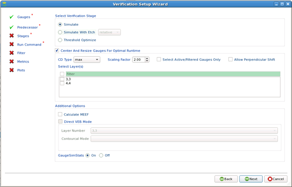

To verify a model
you compare multiple calibrated models with a specific data set.
You determine the metrics that matter.
Procedure
- In the main window, raise
the Calibration Job Manager tab.
- Click Add Verification
Job(s). The Model Verification Wizard appears.
- Select
Gauges, Contours, or Gauges and Contours from the list.
- In the Model Verification
Wizard, select one or more calibration jobs from the list.
Note: To compare verification of the CTR versus the CM1 model,
two calibration jobs and two verification jobs are needed, one for
each model.
- The CTR calibration job requires its own
independent verification stage.
- The CM1 calibration job also requires an independent
verification stage, which is run on the calibrated CTR results.
- For each calibration job you
selected, specify design layers to assign to the mask layers in
the litho model associated with the job.
Note: Selecting the Use Same Layer Mapping For All
Jobs checkbox re-uses your layer selections for all jobs being created.
This checkbox is available only if you specify calibration jobs
with the same litho model. This checkbox is also accessible through
the Multiple Copy wizard in the Calibration Job Manager menu after
job selections have been made.
- Choose
between a simulation stage, a simulation with etch stage, and a
threshold optimization stage for verification. It is recommended
that you choose the “Center and Resize Gauges for Optimal Runtime”
checkbox for faster verification.
If your litho model includes a VEB etch
model, you can verify using Direct VEB Mode by selecting Simulate
with Etch as the Verification Stage type. Direct VEB Mode allows
you to use a layer with etch contours, a contour library information (.cli)
file, or both to perform the verification.
Tip If you are not
interested in plotting the results of the verification job, select
the GaugeSimStats Off radio button.

- Set the
run script command that matches your configuration.
- (Optional)
Select a filter group to use to reduce the number of gauges being
verified in this job.
- (Optional) Select a metric
group to use in establishing verification criteria.
- (Optional) Select plots to
accompany the verification run.
- Click Finish.
Results
Verification jobs are created and
shown in the Calibration Job Manager tab.
The verification check runs on the litho models and returns the
results of the metrics you have selected. Verification plots are
added to the Plots tab.